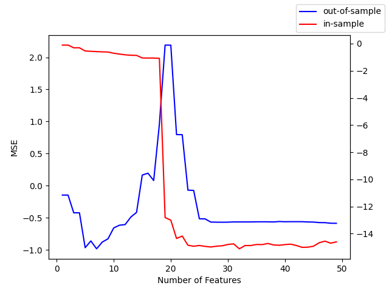

Bayes AI
Unit 9: Bayesian Double Descent and Model Selection: Modern Approach to Bias-Variance Tradeoff
Vadim Sokolov
George Mason University
Spring 2025
Occam’s Razor
We have two alternatives \(H_1\) and \(H_2\) and plausibility of one in reference to the second one given the data is calculated as \[ \dfrac{P(H_1\mid D)}{P(H_1\mid D)} = \dfrac{P(D\mid H_1)}{P(D\mid H_2)}\dfrac{P(H_1)}{P(H_2)} \]
- We can introduce Occam’s razor by putting a higher prior on the simpler model.
- The second ratio is the Bayes factor and it embodies the Occam’s razor automatically.
- Say \(H_2\) is a more complex model, then it spreads the probability mass \(P(D\mid H_2)\) over a larger space.
- Thus, if data is fitted equally well by both models, the simpler model will have a higher posterior probability.
Evidence for \(H_i\)
A simple example
A simple example: \(D = (-1,3,7,11)\),
- \(H_a\) the sequence is an arithmetic progression, start with \(n_0\) ``add \(n\)“, where \(n_0,n\) are integers.
- \(H_c\): the sequence is generated by a cubic function of the form \(x \rightarrow cx^3 + dx^2 + e\), where \(c, d\) and \(e\) are fractions.
Assuming \(n_0,n \in \{-50,-49,\ldots,50\}\), we have \[ P(D\mid H_a) = \dfrac{1}{101^2} = 0.0001. \]
A simple example
- For \(H_c\), if we fit the model, we get \(c=-1/11\), \(d = 9/11\), and \(e = 23/11\).
- We assume that for each ratio the numerator is between -50 and 50 and denominator is between 1 and 50.
- There are four fractions possibilities for \(c\) (1/11, 2/11, 3/11, 4/11), 4 for \(d\) and 2 for \(e\). Thus, the probability of the data given the model is \[ P(D\mid H_c) = \dfrac{1}{101^4}\dfrac{1}{50^3}\times 4\times 4\times 2 = 2.5\times 10^{-12}. \] Note, that we made an implicit assumption, that the prior probability on the parameters is uniform. This assumption is subjective is not always the appropriate one. For example, if we know that the sequence is generated by a cubic function, we can put a prior on the parameters that is more likely to generate a smooth curve.
General Case
In a more general case, the the evidence (a.k.a marginal likelihood) is calculated as follows \[ P(D\mid H_i) = \int P(D\mid \theta, H_i)P(\theta\mid H_i)d\theta. \]
Which can be approximated by the Laplace approximation. In one-dimensional case, we have \[ P(D\mid H_i) \approx P(D\mid \hat{\theta}, H_i)P(\hat \theta\mid H_i)\sigma_{\theta\mid D}, \] where \(\hat{\theta}\) is the maximum aposteriori estimate of the parameters and \(\sigma_{\theta\mid D} = \sqrt{\mathrm{Var}(\theta\mid D)}\).
More generally, in high-dimensional case, we have \[ P(D\mid H_i) \approx P(D\mid \hat{\theta}, H_i)P(\hat \theta\mid H_i)\sqrt{\dfrac{(2\pi)}{\det(\mathbf{H}(\hat\theta))}}, \] here \(\mathbf{H} = -\nabla^2\log P(\theta\mid D,H_i)\) is the Hessian of the log-likelihood function. As the amount of data collected increases, this Gaussian approximation is expected to become increasingly accurate
Model Fitting
The posterior is \[ P(\theta\mid D, H_i) = \dfrac{P(D\mid \theta, H_i)P(\theta\mid H_i)}{P(D\mid H_i)}. \]
\(P(D\mid H_i)\) is called the evidence or marginal likelihood.
Laplace approximation: find \(\hat{\theta}\) that maximizes \(P(D\mid \theta, H_i)\) (MAP) and approximate the posterior as a Gaussian centered at \(\hat{\theta}\) with covariance matrix given by the inverse of the Hessian of the log-likelihood function. \[ \Sigma^{-1} = A = -\nabla^2\log P(\hat \theta\mid D, H_i). \] then we Taylor expansion the log-likelihood function around \(\hat{\theta}\) and get \[ P(D\mid \theta, H_i) \approx P(\hat{\theta}\mid D, H_i)\exp\left(-\dfrac{1}{2}(\theta - \hat{\theta})^TA(\theta - \hat{\theta})\right). \]
In One-Dimensional Case
Model Selection
Model posterior is \[ P(H_i\mid D) = \dfrac{P(D\mid H_i)P(H_i)}{P(D)}. \]
The evidence \(P(D\mid H_i)\) plays role of the likelihood function in the model selection.
The total data probability is \[ P(D) = \sum_{i=1}^k P(D\mid H_i)P(H_i). \] is the same for all the models, so we can ignore it in the model selection.
Assuming \(P(H_i) = 1/k\), we simply choose the model with the higher evidence.
Evaluating the evidence
The evidence is normalizing constant in parameter posterior and is model selection criteria \[ P(D\mid H_i) = \int P(D\mid \theta, H_i)P(\theta\mid H_i)d\theta. \] Laplace approximation for a one-dimensional case \[ P(D\mid H_i) \approx P(D\mid \hat{\theta}, H_i)P(\hat \theta\mid H_i)\sigma_{\theta\mid D}, \]
Likelihood \(\times\) Occam factor \(P(\hat \theta\mid H_i)\sigma_{\theta\mid D}\)
\(\sigma_{\theta\mid D}\) is the posterior uncertainty
For a uniform prior \(P(\hat \theta\mid H_i) \propto 1/\sigma_{\theta}\) \[ \text{Occam Factor} = \dfrac{\sigma_{\theta\mid D}}{\sigma_{\theta}}. \]
Ratio of posterior and prior volumes!
Models a trade-off between minimizing model complexity (\(\sigma_{\theta}\)) and minimizing the data misfit (\(\sigma_{\theta\mid D}\)).
Evaluating the evidence
Multivariate Case
- Laplace approximation (Gaussian centered at MAP estimate) is given by \[ P(D\mid H_i) \approx P(D\mid \hat{\theta}, H_i)P(\hat \theta\mid H_i)\sqrt{\dfrac{(2\pi)^k}{\det(\mathbf{H}(\hat\theta))}}, \] where \(\mathbf{H} = -\nabla^2\log P(\theta\mid D,H_i)\) is the Hessian of the log-likelihood function. As the amount of data collected increases, this Gaussian approximation is expected to become increasingly accurate.
- As the number of sample increases, the posterior distribution becomes more concentrated around the MAP estimate and the Hessian becomes more accurate (Bayesian version of CLT)
- Bayesian model comparison is a simple extension of maximum likelihood model selection: the evidence is obtained by multiplying the best-fit likelihood by the Occam factor.
Tree Example
Tree Example
- Image size is 50 pixels
- Trunk is 10 pixels
- Boxes can be one of 16 colors
- \(H_1\): three coordinates defining the top three edges of the box, and one parameter giving the box’s colour
- \(H_2\): eight free parameters (twice four), plus a ninth, a binary variable that indicates which of the two boxes is the closest to the viewer
- Say coordinate takes 20 possible values and color takes 16 possible values, then \[ P(D\mid H_1) = \dfrac{1}{20^3}\dfrac{1}{16} = 3.125\times 10^{-6}. \]
Tree Example \(H_2\)
- If the left-hand box is furthest away, for example, then its width is at least 8 pixels and at most 30
- if it’s the closer of the two boxes, then its width is between 8 and 18 pixels (assuming here that the visible portion of the left-hand box is about 8 pixels wide)
- Assuming that the two unconstrained real variables have half their values available \[ P(D\mid H_2) \approx \dfrac{1}{20^4}\dfrac{1}{16^6}\dfrac{1}{2^2}\dfrac{2}{2} \]
Then the posterior odds are \[ \dfrac{P(H_1\mid D)}{P(H_2\mid D)} = \dfrac{P(D\mid H_1)P(H_1)}{P(D\mid H_2)P(H_2)} \approx 1000/1. \]
highly suspicious coincidences that the two box heights match exactly and the two colours match exactly
BIC Justification
Definition: \[ p(D\mid M) = \int p(D\mid \theta, M)p(\theta\mid M)d\theta \approx n^{-k/2}p(D\mid \hat \theta) \] where \(k\) is the number of parameters in the model and \(n\) is the number of data points.
BIC uses Laplace approximation to the evidence, when likelihood is evaluated at the MAP estimate \(\hat \theta\) and the prior is uniform (\(n^{-k/2}\)).
BIC
\[ p(M\mid D) = \dfrac{p(D\mid M)p(M)}{p(D)} \] Assuming \(P(M)\) is uniform, we get
\[ p(M\mid D) \approx BIC(M) \]
\[ \log p(D\mid M) \approx -\dfrac{k}{2}\log n + \log p(D\mid \hat \theta, M) \]
AIC: \[ -\dfrac{k}{2}n \] No \(\log\)! It not not appropriate (consistent) fro large \(n\) (Woodraf 1982).
Model should be simple, but not simpler.
Double Descent
Double Descent
Double Descent